Профессия сексолога требует специальной подготовки в области психологии сексуальности, сексуальной терапии и консультирования. Сегодня всё больше специалистов выбирают дистанционный формат обучения благодаря его удобству и доступности. Дистанционные образовательные программы позволяют пройти профессиональную переподготовку, освоить профессию сексолога или повысить квалификацию по семейному консультированию и психологическому консультированию. Мы составили рейтинг лучших онлайн программ 2025 года, которые предлагают дистанционное обучение по современной сексологии. После прохождения курсов и успешного завершения обучения слушатели получают дипломы установленного образца.
Информация обновлена:
ТОП онлайн-курсов обучения по сексологии
- 🏆 Сексология в психологическом консультировании — МИП (по промокоду kursy скидка 🎁 10%)
- 🏆 Сексология: психолог-консультант в сфере сексуальных отношений – Онлайн-Институт Smart
- 🏆 Консультант в сфере сексуальных отношений — Talentsy (по промокоду EDPART5 скидка 🎁 5%)
- Практическая психология с дополнительной специализацией в области сексологии — НАДПО (по промокоду onlinekursy действует скидка 🎁 5%)
- Консультант в сфере сексуальных отношений — Психодемия
- Психолог-сексолог + MBA — МИПО Психология (по промокоду onlinekursy 🎁 скидка 5%)
- Психологическое консультирование в сексологии — Академия EDPRO
- Психологическое консультирование в сфере сексуальных отношений — МШПП
- Сексология в психологическом консультировании — MITM
- Сексология — Институт Медицинского Образования
- Практическая психология с дополнительной специализацией в области сексологии — ИПО
- Прикладная сексология в психологическом консультировании — ИППСС
- Сексуальная супружеская семейная терапия — НАДПО (по промокоду onlinekursy действует скидка 🎁 5%)
- Сексология в психологическом консультировании – ИПО
- Сексология в психологическом консультировании — НЦРДО (по промокоду onlinekursy действует скидка 🎁 5%)
- Сексология. Курс обучения для практикующих сексологов в психологическом консультировании — НИИДПО
- Психолог-сексолог — Учебный центр «НЦПО»
- Сексология — Учебный центр АПОК
- Сексология — Учебный центр ЭКОДПО
- Сексология в психологическом консультировании — ЦАППКК (по промокоду onlinekursy действует скидка 🎁 5%)
Отличительные преимущества каждой дистанционного курса по сексологии
1. 🏆 Сексология в психологическом консультировании – Московский институт психологии
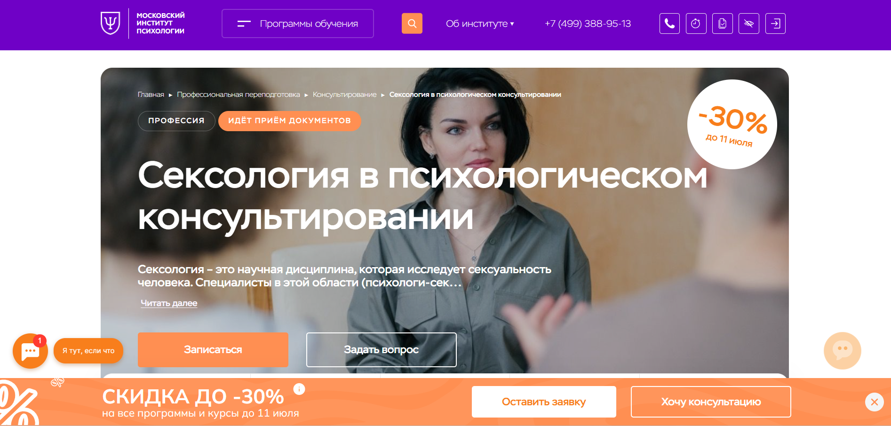- ✅ Официальный сайт: mip.institute
- 💸 Цена: 119 946 ₽ (со скидкой 30%)
- 💳 Рассрочка: 10 000 ₽ в месяц на 12 месяцев, без процентов
- 📚 Формат: дистанционный формат, видеоуроки, вебинары, задания, тестирование, доступ к библиотеке
- ⏳ Продолжительность: 10 месяцев, 1400 академических часов
- 📜 Документ: диплом о профессиональной переподготовке установленного образца
- 📝 Трудоустройство: подготовка к частной практике и работе с клиентами в сфере сексуального консультирования
- 🔷 Для кого подходит курс: начинающие психологи, действующие консультанты, специалисты без диплома, желающие пройти профессиональную переподготовку в дистанционном формате
Особенности:
Курс разработан с акцентом на практические навыки работы с сексуальными вопросами и консультированием. Образовательный процесс построен через дистанционное обучение, что делает его удобным для слушателей с любым графиком. Форматы обучения охватывают видеолекции, супервизии, реальные кейсы и вебинары. Студенты получают доступ к учебной платформе и материалам, включая тематические модули по семейной терапии, клинической практике и сексуальной этике. После окончания курса выдаются дипломы, признанные как в России, так и за рубежом.
Чему учатся студенты:
- Пониманию теоретической базы сексологии и особенностей клинической практики
- Анализу причин сексуальных проблем и проведению диагностики
- Применению методов сексуальной терапии и консультирования
- Созданию программ по сексуальному здоровью и профилактике
- Соблюдению стандартов профессиональной этики
Преподаватели:
- Додонова Ирина Викторовна — практикующий психолог, транзактный анализ, IFS, EMDR, коуч, автор программ и книг
- Валуев Олег Сергеевич — консультант экзистенциального направления, научный автор, медиа-аналитик, эксперт в области будущего
Преимущества:
- Обучение проходит полностью дистанционно с доступом к образовательной платформе
- Выдаются дипломы установленного образца с международным приложением
- Доступ к профессиональному сообществу психологов и участие в супервизиях
- Обратная связь от преподавателей и поддержка куратора
- Курс подходит для совмещения с работой благодаря удобному графику
- Практическая направленность программы на реальные запросы клиентов
- Возможность пройти обучение без высшего психологического образования
- Получение актуальных знаний в сфере сексуального и семейного консультирования
Отзывы учеников:
Слушатели положительно оценивают формат дистанционного обучения, особенно доступность материала и поддержку кураторов. Отмечают высокое качество лекций, удобство образовательной платформы и полезность практических занятий. Также важным преимуществом считается возможность совмещать обучение с основной работой.
Перейти на официальный сайт курса2. 🏆 Сексология: психолог-консультант в сфере сексуальных отношений – Онлайн Институт Smart
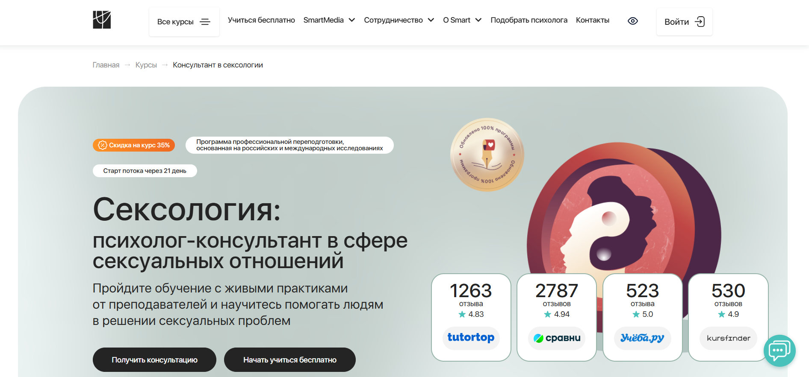
- ✅ Официальный сайт: smart-inc.ru
- 💸 Цена: 159 912 ₽ (при рассрочке и скидке 35%)
- 💳 Рассрочка: от 6663 ₽/мес. - 3, 6, 12, 24 месяца, без переплат
- 📚 Формат: дистанционный формат обучения с практикой, видеосессии, супервизии, домашние задания, демо-сессии, доступ к платформе
- ⏳ Продолжительность: от 7 до 14 месяцев
- 📜 Документ: диплом о профессиональной переподготовке, диплом MBA (Чехия, Гамбург)
- 📝 Трудоустройство: предоставление клиентов для практики, карьерное сопровождение, доступ к базе знаний
- 🔷 Для кого подходит курс: для желающих освоить профессию сексолога, психологов, педагогов, медиков и всех, кто хочет работать в сфере сексуального консультирования
Особенности:
Программа подготовки ориентирована на развитие навыков в области психологического консультирования сексуальной сферы с акцентом на практическую работу. Студенты проходят дистанционное обучение с живыми практиками, получают обратную связь от менторов и тьюторов. Особое внимание уделяется работе с травмами, сексуальными дисфункциями, установками и воспитанием. Учебный план включает не только психологическую, но и медицинскую часть, что позволяет работать в сотрудничестве с врачами. После завершения обучения выдаются дипломы установленного образца, которые регистрируются в ФРДО.
Чему учатся студенты:
- Понимать природу сексуальных дисфункций и зависимостей
- Работать с установками и убеждениями клиента
- Проводить консультации по вопросам сексуального воспитания
- Владеть техниками консультирования в сфере сексуальных отношений
- Анализировать и устранять причины интимных проблем
- Работать с травмами сексуального характера
- Понимать особенности гендерной идентичности и сексуальности
Преподаватели:
- Лилия Гарипова — сексолог, гештальт-терапевт, автор книги «Анатомия женственности», сертифицированный тренер
- Мария Медведева — психолог, преподаватель и консультант, член профессиональных сообществ
Преимущества:
- Практико-ориентированный подход с реальными кейсами
- Участие в программе SmartMental для наработки часов
- Поддержка кураторов, тьюторов и менторов 24/7
- Возможность получить международный диплом
- Доступ к курсу сохраняется навсегда
- Скидка 35% для первых 15 студентов потока
- Возможность совмещать обучение с работой
- Членство в профессиональных ассоциациях (ОППЛ, АППП)
Отзывы учеников:
Студенты выделяют удобный формат дистанционного обучения, высокую квалификацию преподавателей, обилие практических занятий и возможность получить клиентов уже во время прохождения курса. Многие отмечают, что после окончания обучения они чувствуют уверенность в своих знаниях и готовы вести консультативную практику.
Перейти на официальный сайт курса3. 🏆 Консультант в сфере сексуальных отношений – онлайн-университет Talentsy
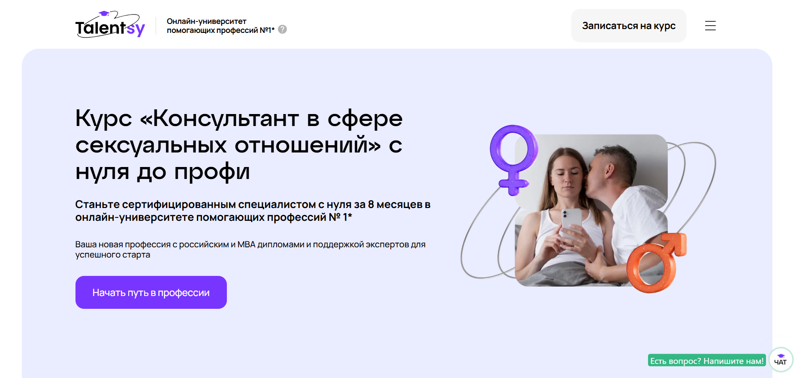
- ✅ Официальный сайт: talentsy.ru
- 💸 Цена обучения: 334 992 ₽ (с учетом гранта на 110 000 ₽)
- 💳 Рассрочка: от 13958 ₽/мес - 3, 6, 12 или 24 месяца, первый платеж через 2 месяца
- 📚 Формат: дистанционное обучение, видеолекции, практические задания, вебинары, групповые занятия до 20 человек
- ⏳ Продолжительность: 8 месяцев
- 📜 Документ: диплом о профессиональной переподготовке РФ, международный диплом MBA, сертификаты IPHM и CPD
- 📝 Трудоустройство: помощь в продвижении, сопровождение до первых клиентов
- 🔷 Для кого подходит курс: практикующим и начинающим психологам, педагогам, коучам, медикам, желающим освоить новую востребованную профессию
Особенности:
Программа разработана в дистанционном формате и включает глубокое изучение сферы сексуальных отношений и психологического консультирования. Курс подойдёт тем, кто хочет работать в качестве семейного консультанта, клинического психолога или практического психолога. Студенты обучаются через образовательную платформу, получают доступ к 650 часам теории и практики, выполняют задания под контролем кураторов и получают диплом установленного образца после успешного прохождения курса. Форматы обучения позволяют совмещать обучение с основной работой. Программа соответствует стандартам дополнительного профессионального образования и включает супервизии и реальные кейсы. Курсы проходят онлайн с поддержкой наставников 12/7.
Чему учатся студенты:
- Работать с сексуальными расстройствами и нарушениями в отношениях
- Применять современные методы сексуальной терапии
- Использовать когнитивно-поведенческие и телесно-ориентированные подходы
- Понимать анатомию и физиологию сексуальности
- Оказывать помощь клиентам с травмами и последствиями насилия
- Владеть стратегиями эффективной коммуникации с парами
Преподаватели:
- Елена Новосёлова — эксперт в сексологии, автор и ведущая 24 профессиональных мастерских
- Анастасия — куратор-маркетолог, сопровождает студентов до первых клиентов
- Топовые психологи и врачи-сексологи с международным опытом и признанием в профессиональном сообществе
Преимущества:
- Выдаются дипломы РФ и международные сертификаты
- Обучение проходит в удобном дистанционном формате
- Гибкий график позволяет совмещать обучение с работой
- Доступ к образовательной платформе и дополнительным материалам
- Поддержка наставников и супервизоров на всех этапах
- Профессиональная переподготовка с правом ведения практики
- Бонусный курс по продвижению услуг консультанта
- Программа актуальна для дистанционных образовательных форматов 2025 года
Отзывы учеников:
Студенты особенно ценят гибкий формат обучения, насыщенные практические задания и поддержку от кураторов. Многие отмечают, что уже в процессе прохождения курса начали вести консультации и уверенно вышли на рынок с новой профессией. Отзывы положительные, чаще всего упоминаются понятные материалы, дистанционное обучение и удобный доступ к платформе.
Перейти на официальный сайт курса4. Практическая психология с дополнительной специализацией в области сексологии – Национальная академия дополнительного профессионального образования
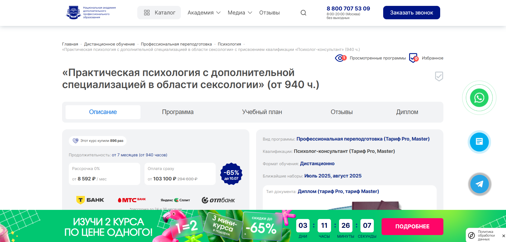
- ✅ Официальный сайт: nadpo.ru
- 💸 Цена: от 103 100 ₽ (со скидкой 65%)
- 💳 Рассрочка: 0% — от 8 592 ₽ в месяц, доступна до 36 месяцев
- 📚 Формат: дистанционный формат, видеолекции, задания, тесты, воркшопы, записи практики, куратор, доступ к библиотекам, обратная связь
- ⏳ Продолжительность: от 7 месяцев (от 940 часов)
- 📜 Документ: диплом установленного образца о профессиональной переподготовке
- 📝 Трудоустройство: помощь в составлении резюме, репетиция собеседования, рассылка вакансий, наставничество
- 🔷 Для кого подходит курс: для желающих освоить профессию сексолога, психологов, клинических специалистов, семейных консультантов
Особенности:
Программа создана для тех, кто хочет пройти профессиональную переподготовку в дистанционном формате и получить востребованную квалификацию. Она включает современные методы консультирования, позволяет освоить навыки арт-терапии, практиковаться на онлайн-платформах и получить реальные знания для работы с сексуальными проблемами. Обучение подходит для тех, кто ценит удобный график, доступ к актуальным материалам и поддержку преподавателей. Студенты получают доступ к платформе даже после окончания курса, а документ о завершении обучения соответствует государственным требованиям.
Чему учатся студенты:
- Психологическому консультированию клиентов
- Применению техник арт-терапии в сексуальной терапии
- Работе в дистанционном и очном формате с клиентами
- Методам психодиагностики и психотерапии
- Созданию и развитию личного бренда специалиста
- Психологии семейных отношений и сексуальности
Преподаватели:
- Якиманская Виктория Игоревна — преподаватель курса, специалист в области практической психологии и сексологии
- Галант Роман Анатольевич — эксперт в области психологического консультирования, куратор курса
- Воробьев Алексей Александрович — практикующий психолог, преподаватель по методам психотерапии
Преимущества:
- Выдаются дипломы установленного образца
- Поддержка HR-наставника на старте карьеры
- Можно совмещать обучение с работой
- Доступ к онлайн-платформе после окончания обучения — 6 месяцев
- Возможность работать с клиентами в реальном времени
- Разнообразие форматов обучения: от Start до Master
- Индивидуальный подход, поддержка кураторов
- Подходит для перехода в новую профессию или повышения квалификации
Отзывы учеников:
Выпускники отмечают удобный формат обучения, насыщенность учебных материалов и возможность получить практические навыки без отрыва от работы. Часто упоминаются помощь в трудоустройстве, поддержка кураторов и доступность платформы после окончания программы. Студенты ценят качество преподавания и высокую востребованность профессии сексолога на рынке труда.
Перейти на официальный сайт курса5. Консультант в сфере сексуальных отношений — Психодемия
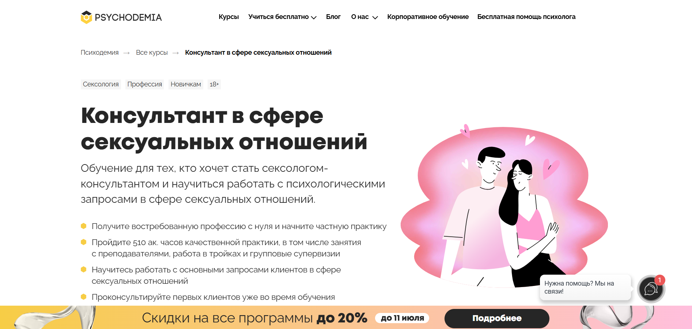
- ✅ Официальный сайт: psychodemia.ru
- 💸 Цена обучения: 393 351 ₽, доступна скидка до 20%
- 💳 Рассрочка: от 16 389 ₽.
- 📚 Формат: дистанционный формат, занятия с преподавателями, работа в тройках, групповые супервизии, практические задания.
- ⏳ Продолжительность: 510 академических часов.
- 📜 Документ: диплом о профессиональной переподготовке установленного образца.
- 📝 Трудоустройство: возможность начать консультирование клиентов уже в процессе прохождения программы.
- 🔷 Для кого подходит курс: для начинающих, желающих получить новую профессию в сфере сексуальных отношений, а также для практикующих специалистов.
Особенности:
Образовательная программа построена на принципах современной сексологии и психологического консультирования. Благодаря дистанционному обучению студенты получают доступ к учебной платформе в любом удобном месте и графике. Форматы обучения включают активную практику, что позволяет быстрее освоить реальные навыки консультирования. Программа подходит слушателям с психологическим образованием и тем, кто хочет освоить новую профессию с нуля. Все материалы доступны онлайн, занятия проходят с опытными преподавателями, включая работу в малых группах. После успешного прохождения обучения выпускники получают диплом установленного образца. Курсы подходят для подготовки практического психолога, семейного консультанта и специалистов в сфере сексуальной терапии.
Чему учатся студенты:
- Работать с запросами клиентов в сфере сексуальных отношений
- Применять методы сексуальной терапии
- Вести психологическое консультирование взрослых
- Разбираться в аспектах сексуальности и интимных проблемах
- Взаимодействовать с клиентами в формате супервизий
- Оказывать помощь при сексуальных расстройствах
Преподаватели:
- Виктория Гайдукова — психолог, сексолог, преподаватель курса
- Александра Степанова — практикующий клинический психолог
- Анна Колесникова — специалист по семейной терапии
- Алексей Гришин — врач-сексолог, куратор программ
Преимущества:
- Формат обучения позволяет совмещать курс с работой
- Получение реальной практики уже в процессе обучения
- Выдаются дипломы установленного образца
- Включены занятия с преподавателями и супервизии
- Подходит для специалистов без базового медицинского образования
- Доступ к материалам курса 24/7 через образовательную платформу
- Возможность обучаться из любой точки страны
- Актуальные темы сексуальности и практическая направленность
Отзывы учеников:
Слушатели подчеркивают удобный формат дистанционного обучения, насыщенность программы и высокий уровень преподавания. Особенно отмечают практические задания, возможность консультировать реальных клиентов и поддержку кураторов на всех этапах обучения. Студенты довольны тем, что программа помогает освоить профессию сексолога и уверенно начать практику уже в процессе прохождения курса.
Перейти на официальный сайт курса6. Психолог-сексолог + MBA — Московский Институт Профессионального Образования

- ✅ Официальный сайт: mipoin.ru
- 💸 Цена: 112 531 ₽ (со скидкой 30%).
- 💳 Рассрочка: от 3 125 ₽/мес
- 📚 Формат: дистанционный формат обучения — видеолекции, домашние задания, тестирования, живые вебинары, работа с реальными кейсами.
- ⏳ Продолжительность: 15 месяцев.
- 📜 Документ: три диплома о профессиональной переподготовке, включая международное приложение.
- 📝 Трудоустройство: после окончания курса можно начать практику, увеличить стоимость консультаций, выйти на международный рынок.
- 🔷 Для кого подходит курс: для новичков в психологии, практикующих специалистов, интересующихся семейной и сексуальной терапией, желающих получить дополнительные профессиональные компетенции.
Особенности:
Обучение проходит полностью в дистанционном формате, что позволяет совмещать учебу с работой. Курсы построены на реальных кейсах и задачах, с которыми сталкиваются практические психологи. Студенты изучают психологическое консультирование, включая семейную и сексуальную терапию. Материалы курса доступны сразу, можно проходить обучение в любом удобном графике. Особое внимание уделяется формированию практических навыков, а также международному применению знаний. Дистанционные образовательные технологии помогают освоить профессию сексолога с нуля или расширить специализацию до уровня бизнес-консультанта. По завершении обучения выдаются дипломы установленного образца и доступ к профессиональному сообществу.
Чему учатся студенты:
- Навыкам психологического консультирования в сфере сексуальной терапии
- Работе с психосексуальными нарушениями и возрастными кризисами
- Методам бизнес-коучинга и карьерного консультирования
- Анализу интимных проблем в паре и построению доверительной коммуникации
- Использованию гештальт-подхода для диагностики и консультирования
- Пониманию физиологических и психологических аспектов сексуальности
Преподаватели:
- Цяпало Анна — практикующий семейный психолог, сексотерапевт, более 10 000 часов работы с клиентами
- Дубровская Анастасия — гештальт-терапевт, профессиональный психолог
- Урывчикова Татьяна — нейропсихолог, клинический психолог, преподаватель
- Шавырина Анна — кандидат психологических наук, эксперт родительского консультирования
- Череменская Мария — семейный психолог, автор книг по психологии
- Шушкина Людмила — арт-терапевт, кандидат психологических наук
- Бербер Наталья — научный сотрудник, бизнес-тренер
- Дарменко Елена — кандидат экономических наук, доцент МГТУ им. Баумана
- Лебедев Александр — юридический психолог, гипнотерапевт
- Лаврова Юлия — семейный психолог, ведущая тренингов
- Латынцева Ольга — практикующий психолог, эксперт ТВ
Преимущества:
- Обучение проходит в дистанционном формате с гибким графиком
- Выдаются дипломы установленного образца и международное приложение
- Программа включает модули по психологии, сексологии и бизнес-консультированию
- После прохождения курсов выпускники могут работать с клиентами в любой стране
- Получаете доступ к чату с преподавателями и другими слушателями
- Занятия построены на практическом опыте с реальными клиентами
- Углубленная подготовка по сексуальной и семейной терапии
- Подходит как для новичков, так и для действующих психологов
Отзывы учеников:
Студенты отмечают удобный формат, насыщенность учебных материалов и доступ к преподавателям. Особенно ценят практическую направленность курсов, возможность совмещать обучение с работой и получение дипломов международного уровня. Большинство выпускников используют полученные знания в частной практике и успешно расширяют сферу услуг.
Перейти на официальный сайт курса7. Психологическое консультирование в сексологии – Академия EDPRO
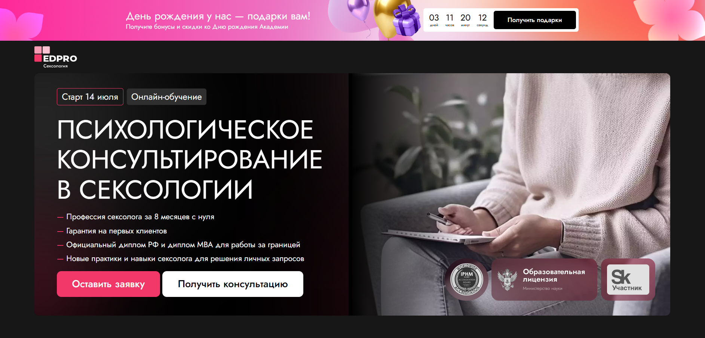
- ✅ Официальный сайт: edprodpo.com
- 💸 Цена обучения: от 142 313 ₽ (при оплате со скидкой 25%)
- 💳 Рассрочка: от 6 325 ₽/мес. без переплат
- 📚 Формат: дистанционный формат с видеолекциями, практикой, домашними заданиями и супервизиями
- ⏳ Продолжительность: от 8 до 11 месяцев в зависимости от выбранного тарифа
- 📜 Документ: диплом установленного образца РФ и международный диплом MBA
- 📝 Трудоустройство: размещение в каталоге экспертов и гарантия первых клиентов
- 🔷 Для кого подходит курс: для тех, кто хочет пройти профессиональную переподготовку и начать карьеру в сфере сексуальной терапии и психологического консультирования
Особенности:
Курс охватывает все ключевые направления современной сексологии и организован в удобном дистанционном формате. Он рассчитан на слушателей без высшего психологического или медицинского образования. Программа разработана с акцентом на практику: студенты работают в тройках, выполняют кейсы и проходят стажировки. Учебный процесс сопровождается кураторами и персональными наставниками. Образовательная платформа доступна 24/7 с любого устройства. После окончания обучения выдается диплом установленного образца и международный диплом MBA, позволяющий консультировать не только в России, но и за рубежом.
Чему учатся студенты:
- Работать с сексуальными проблемами и травматическим опытом
- Оказывать помощь в семейных и интимных отношениях
- Применять современные техники психологического консультирования
- Консультировать мужчин, женщин и пары по вопросам сексуальности
- Развивать личный бренд и вести прием клиентов онлайн
Преподаватели:
- Марина Забагонская — психолог, сексолог, автор курса
- Ольга Штерн — инструктор по интимным мышцам
- Екатерина Фёдорова — автор 15 книг по психологии
- Екатерина Макарова — соучредитель Российской Ассоциации Сексологов
- Лев Щеглов — сексолог с 40-летним опытом, академик
- Александр Полеев — профессор Сорбонны и Тринити (США)
- Юлия Варра — преподаватель сексуальной йоги, ТВ-эксперт
- Ирина Ним — член Французской ассоциации сексотерапевтов
Преимущества:
- Дистанционное обучение на удобной платформе
- Гарантия до трёх реальных клиентов после завершения курса
- Международный диплом для работы за границей
- Программа подходит без медицинского или психологического образования
- Возможность совмещать обучение с основной работой
- Поддержка кураторов и менторов 24/7
- Профессиональное сообщество и нетворкинг
- Размещение в каталоге специалистов бесплатно на 4 месяца
Отзывы учеников:
Студенты чаще всего отмечают практическую направленность программы, удобный формат обучения, помощь кураторов и быстрый старт в профессии. Многим удалось найти клиентов еще до окончания курса, а также увеличить доход благодаря новой квалификации. Высоко оценивают доступность платформы и качество преподавательского состава.
Перейти на официальный сайт курса8. Психологическое консультирование в сфере сексуальных отношений – МШПП
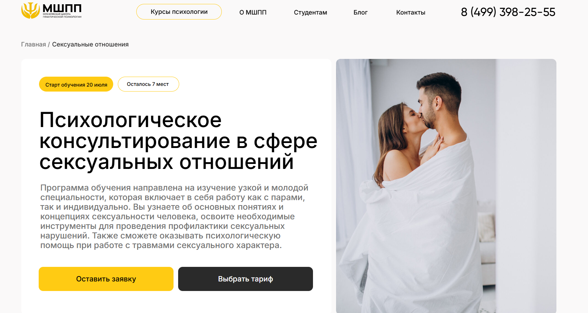
- ✅ Официальный сайт: mspp.online
- 💸 Цена: от 90 000 ₽ до 190 000 ₽
- 💳 Рассрочка: от 2 500 ₽/мес. - от 3 до 36 месяцев (школа и банки-партнеры)
- 📚 Формат: дистанционный формат, видеолекции, практические задания, супервизии, мини-группы, вебинары, доступ к платформе
- ⏳ Продолжительность: 6 месяцев (до 680 часов)
- 📜 Документ: диплом установленного образца, диплом MBA
- 📝 Трудоустройство: карьерный центр помогает с поиском работы и адаптацией
- 🔷 Для кого подходит курс: начинающим специалистам, практикующим психологам, выпускникам, желающим сменить профессию, тем, кто хочет консультировать в сфере сексуальности
Особенности:
Программа обучения разработана с учётом специфики дистанционных образовательных форматов и включает в себя как теорию, так и активную практику. Студенты изучают современные подходы к сексуальной терапии, методы консультирования и взаимодействие с клиентами в онлайн-среде. Учебная платформа проста в использовании, занятия проходят в удобном формате и позволяют совмещать обучение с работой. Доступ к материалам сохраняется навсегда. Программа включает глубокую проработку тем сексуальности, травм, возрастных изменений и семейных проблем, что делает выпускников востребованными специалистами. Участники получают квалификацию практического психолога с акцентом на сферу сексологии.
Чему учатся студенты:
- Проводить психологическое консультирование по вопросам сексуальности
- Работать с индивидуальными клиентами и парами
- Диагностировать расстройства сексуальной сферы
- Применять методы коррекции сексуальных нарушений
- Оказывать помощь при травмах сексуального характера
- Работать в дистанционном формате с сохранением эффективности
- Создавать личный бренд и продвигать услуги онлайн
Преподаватели:
- 47 экспертов-практиков: ведущие психологи и психотерапевты, имена не указаны на сайте, но заявлены как ТОП-преподаватели отрасли
- Все преподаватели имеют действующую практику и опыт работы с сексуальной сферой
Преимущества:
- Получение диплома о профессиональной переподготовке и диплома MBA
- Поддержка карьерного центра до окончания обучения
- Разнообразные форматы обучения: от видеолекций до очных занятий
- Глубокая практическая подготовка в мини-группах и тройках
- Доступ к международной сертификации и возможности работать с зарубежными клиентами
- Участие в клубе выпускников и тематических встречах
- Онлайн-кабинет психолога "под ключ"
- Бонусные модули по продвижению и профилактике выгорания
Отзывы учеников:
Студенты часто отмечают удобный формат дистанционного обучения, насыщенную практику и внимательную работу кураторов. Хвалят структуру программы, доступность преподавателей и возможность совмещать обучение с работой. Высоко ценится индивидуальный подход и профессиональная поддержка в процессе обучения.
Перейти на официальный сайт курса9. Сексология в психологическом консультировании — Московский институт технологий и управления
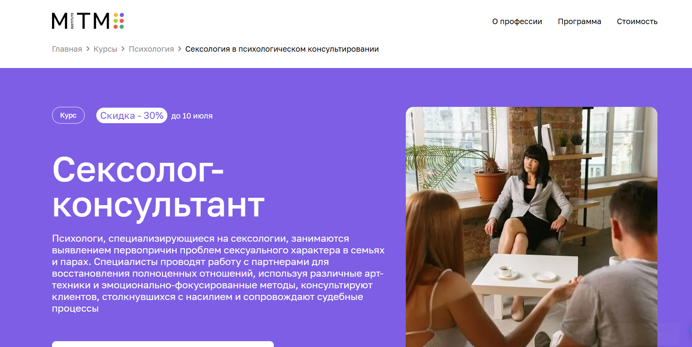- ✅ Официальный сайт: mitm.institute 💸 Цена обучения: от 84 960 ₽ (со скидкой 30%).
- 💳 Рассрочка: от 7 080 ₽ в месяц на 12 месяцев без переплат, возможна оплата через Тинькофф Банк.
- 📚 Формат: дистанционный формат — видеоуроки, задания, онлайн-вебинары, практика и супервизии.
- ⏳ Продолжительность: 8 месяцев (900 часов).
- 📜 Документ: диплом установленного образца о профессиональной переподготовке.
- 📝 Трудоустройство: помогает начать работать в новой профессии или расширить действующую практику.
- 🔷 Для кого подходит курс: начинающим, практическим психологам, семейным консультантам, клиническим специалистам, а также всем интересующимся сексуальной сферой.
Особенности:
Курс построен в удобном дистанционном формате, что позволяет совмещать обучение с личной жизнью или основной работой. Образовательная платформа обеспечивает доступ к материалам в любое время. Программа актуализирована под запросы работодателей и рынок психологических услуг. Участники получают поддержку от кураторов и менторов на каждом этапе обучения. Предусмотрены практические занятия и анализ кейсов, что развивает реальные навыки консультирования. Обучение проходит на базе института с лицензией, поэтому после окончания обучения выдается государственный диплом. В рамках курса используются современные методы, включая арт-терапию и эмоционально-фокусированные подходы.
Чему учатся студенты:
- Работать с сексуальными расстройствами и снижением влечения
- Понимать психосексуальное развитие и возрастные особенности
- Применять методы сексуальной терапии и арт-подходы
- Анализировать влияние насилия на психику и сексуальность
- Консультировать семьи и пары с интимными проблемами
- Использовать принципы этики в работе с клиентами
- Владеть навыками диагностики в сексуальной сфере
Преподаватели:
- Леонова Светлана — клинический психолог, психоаналитик, сексолог, магистр психологии, 11 лет стажа
- Мосяков Артём — выпускник РНИМУ им. Пирогова, сексолог и телесно-ориентированный терапевт
- Елена Айрапетян — интегративный психолог, член АКПП, магистр психологии
Преимущества:
- Обучение проводится полностью онлайн в удобном для слушателя ритме
- Получение диплома установленного образца по окончании курса
- Актуальные темы и современные методики в рамках дистанционных образовательных программ
- Поддержка кураторов и участие в онлайн-сообществе
- Возможность совмещать профессиональную переподготовку с работой
- Разбор реальных клиентских кейсов на практических занятиях
- Доступ к лекциям, вебинарам и дополнительным материалам
- Возможность вернуть 13% стоимости обучения через налоговый вычет
Отзывы учеников:
Слушатели часто отмечают высокое качество подачи материала, четкую структуру программы и реальную помощь преподавателей. Многие подчеркивают, что курс помог лучше понять клиентов и уверенно начать практику. Также ценится удобный формат обучения и доступ к поддержке на всех этапах.
Перейти на официальный сайт курса10. Сексология – Институт Медицинского Образования
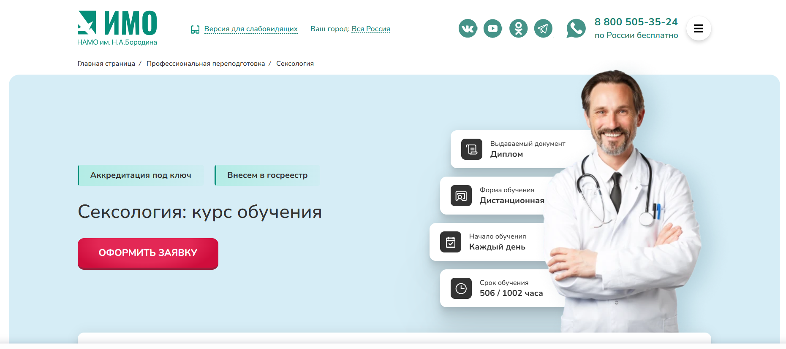
- ✅ Официальный сайт: institut-medicina.ru
- 💸 Цена обучения: зависит от выбранной программы и срока, можно рассчитать на сайте.
- 💳 Рассрочка: доступна без первоначального взноса, включая группы от трёх человек со скидкой от 10%.
- 📚 Формат: дистанционный формат, доступ к видеолекциям, тестам, домашним заданиям, сопровождение куратора.
- ⏳ Продолжительность: от 2 до 10 месяцев (от 252 до 1002 часов).
- 📜 Документ: диплом о профессиональной переподготовке установленного образца.
- 📝 Трудоустройство: можно работать врачом-сексологом в медцентре или вести частную практику.
- 🔷 Для кого подходит курс: для врачей с высшим медицинским образованием, окончивших ординатуру или интернатуру по смежным специальностям.
Особенности:
Курс реализуется в дистанционном формате, что позволяет совмещать обучение с основной работой. Программа включает профессиональную подготовку в области сексуальной терапии, семейного консультирования и психологического консультирования. Студенты получают доступ к образовательной платформе, где размещены актуальные учебные материалы и инструменты. Образование проходит без отрыва от практики, а сопровождение методистов и кураторов делает процесс обучения удобным. После завершения курсов студенты проходят итоговое тестирование и получают диплом установленного образца. Образовательный процесс учитывает современные требования Минздрава и обеспечивает получение качественных знаний.
Чему учатся студенты:
- Проводить генитальное обследование мужчин и женщин
- Оценивать психосексуальное развитие и половую конституцию
- Диагностировать сексуальные расстройства и девиации
- Применять методы сексуальной терапии и психотерапии
- Вести семейное и психологическое консультирование
- Оценивать состояние сексуального здоровья населения
- Использовать методы десенсибилизации и секс-терапии
Преподаватели:
- Ирина Власова — более 4 лет методической работы, эксперт в подготовке врачей и среднего медперсонала, сопровождает обучение слушателей с индивидуальным подходом.
Преимущества:
- Выдаются дипломы установленного образца
- Процесс обучения сопровождает персональный куратор
- Форматы обучения адаптированы под любой график
- Доступны типовые и индивидуальные учебные планы
- После прохождения программы студенты получают практические навыки работы с клиентами
- Доставка документов по России — бесплатно
- Дистанционное обучение без необходимости отрыва от работы
- Образовательная платформа с актуальными материалами
Отзывы учеников:
Слушатели подчеркивают удобный формат обучения, гибкий график и профессионализм преподавателей. Особенно отмечают возможность дистанционного получения знаний, оперативную поддержку кураторов и быструю отправку дипломов. Многие прошедшие курс успешно устроились в клиники или открыли собственную практику.
Перейти на официальный сайт курса11. Практическая психология с дополнительной специализацией в области сексологии – Институт Профессионального Образования
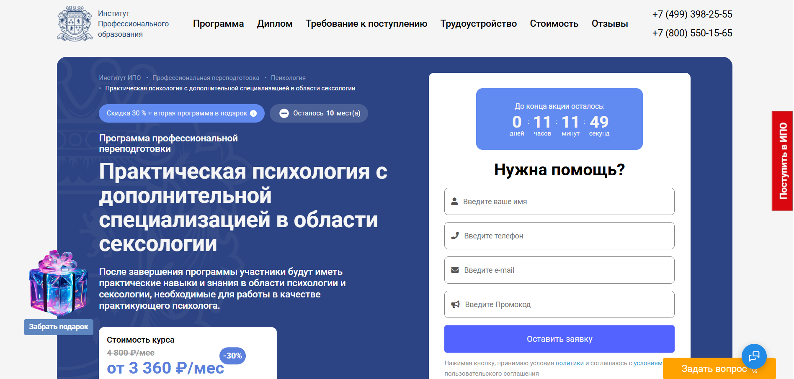
- ✅ Официальный сайт: ipo.msk.ru
- 💸 Цена: от 80 640 ₽ (со скидкой 30%)
- 💳 Рассрочка: от 3 360 ₽/мес до 24 месяцев, без переплат
- 📚 Формат: дистанционный формат, видеолекции, практические задания, вебинары, тесты, поддержка ментора
- ⏳ Продолжительность: 11 месяцев (916 часов)
- 📜 Документ: диплом о профессиональной переподготовке установленного образца
- 📝 Трудоустройство: сопровождение Центра развития карьеры, помощь с резюме и консультациями
- 🔷 Для кого подходит курс: начинающие и действующие психологи, педагоги, соцработники, желающие освоить сферу сексологии и консультирования
Особенности:
Программа сочетает в себе психологическое консультирование и обучение основам современной сексологии. Дистанционный формат дает возможность совмещать обучение с работой, а гибкий график помогает освоить материалы в удобное время. Слушатели получают доступ к образовательной платформе, общению с кураторами и участию в практических онлайн-занятиях. После окончания курса выдаются дипломы, соответствующие государственным требованиям. Курс актуален для тех, кто хочет освоить профессию практического психолога с возможностью работать в области интимных и сексуальных запросов. Также это отличная возможность повысить квалификацию специалистам, уже работающим в сфере семейного консультирования или клинической психологии.
Чему учатся студенты:
- Психология личности, семьи, возраста, организаций
- Психология сексуальности, сексуальная терапия, нормы и отклонения
- Методы психодиагностики и консультирования
- Основы профессиональной этики психолога
- Диагностика когнитивной и поведенческой сферы
- Работа с клиентами по вопросам сексуальности и идентичности
- Практика консультирования, кейс-методы, обратная связь от менторов
Преподаватели:
- Олеся Александровна Круглушина — практикующий психолог, психотерапевт, преподаватель психологии
- Юлианна Евгеньевна Койфман — тренинг-менеджер, специалист по социальной психологии
- Людмила Николаевна Шушкина — семейный психолог, автор книг, преподаватель
Преимущества:
- Выдаются дипломы установленного образца с правом консультирования
- Обучение проходит на удобной онлайн-платформе
- Доступ к практическим занятиям в записи и реальной практике
- Карьерное сопровождение и поддержка после окончания программы
- Гибкие форматы обучения: обучение проводится по индивидуальному графику
- В курс включены дополнительные программы и бонусные модули
- Образовательная лицензия и государственное признание документов
- Подходит для специалистов с высшим или средним профессиональным образованием
Отзывы учеников:
Слушатели отмечают, что курсы удобно проходить дистанционно, при этом сохраняется высокий уровень преподавания. Среди плюсов часто называют практические задания, доступ к материалам в любом удобном формате и профессиональную поддержку. Выпускники подчеркивают значимость менторства и помогают клиентам уже в процессе обучения.
Перейти на официальный сайт курса12. Прикладная сексология в психологическом консультировании — Институт прикладной психологии в социальной сфере
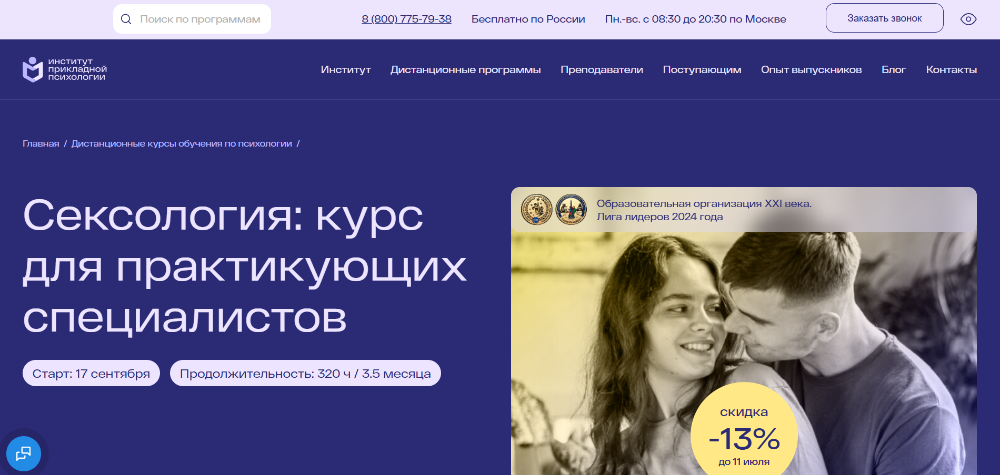- ✅ Официальный сайт: ippss.ru
- 💸 Цена: 33 600 ₽ (со скидкой -13%, полная стоимость — 38 600 ₽)
- 💳 Рассрочка: от 3 217 ₽/мес без переплат, через банки или Яндекс Пэй
- 📚 Формат: дистанционный формат: видеоуроки, конспекты, домашние задания с обратной связью, онлайн-консультации, вебинары, учебная платформа 24/7
- ⏳ Продолжительность: 3,5 месяца / 320 академических часов
- 📜 Документ: диплом о профессиональной переподготовке установленного образца, регистрация в ФИС ФРДО
- 📝 Трудоустройство: карьерные консультации, база вакансий, обучение продвижению, помощь в старте частной практики
- 🔷 Для кого подходит курс: практикующим и начинающим психологам, клиническим психологам, семейным консультантам, желающим освоить сферу сексуальной терапии
Особенности:
Обучение проводится полностью онлайн в удобном формате. В программе акцент сделан на практику — слушатели получают знания и тут же применяют их в работе. Материалы доступны в любое время: студенты проходят обучение по собственному графику, совмещая его с работой. Включены онлайн-встречи с экспертами, обратная связь по заданиям, индивидуальные кейсы и работа с реальными запросами клиентов. Курс основан на стандартах ФГОС и профстандарте «Психолог-консультант», что гарантирует соответствие образовательным требованиям. Выпускники получают диплом установленного образца, дающий право на работу по всей России. Предусмотрен доступ к 10 000+ записям вебинаров, бонусным материалам и библиотеке. После окончания курса открывается доступ к Центру развития карьеры.
Чему учатся студенты:
- Проводить консультирование по вопросам сексуальности и интимных отношений
- Выявлять сексологические запросы и формировать план работы с клиентом
- Использовать техники и методы сексуальной терапии
- Анализировать кейсы и разрабатывать рекомендации
- Развивать личный бренд и продвигать частную практику
- Работать с сексуальными проблемами: сниженное либидо, страхи, дисгармония в паре и др.
Преподаватели:
- Леонова Светлана Юрьевна — преподаватель ВУЗа, аналитический и клинический психолог, психолог-сексолог
- Волкова Анастасия Михайловна — психотерапевт по методу символдрамы, сексолог, перинатальный, репродуктивный и детский психолог
Преимущества:
- Обучение проводится в дистанционном формате без вступительных экзаменов
- Выдаются дипломы установленного образца с регистрацией в госреестре
- Индивидуальный график обучения и доступ 24/7
- Карьерная поддержка и консультации после окончания курса
- Материалы остаются у слушателя навсегда
- Онлайн-доступ к экспертам и возможность задавать вопросы в любое время
- Акцент на практические навыки и применение знаний в реальной практике
Отзывы учеников:
Слушатели хвалят курс за удобный формат и насыщенное содержание. Часто отмечают, что обучение помогает не только развиваться как специалисту, но и глубже понять себя. Отдельно выделяют поддержку преподавателей, структурированность лекций и практическую пользу домашних заданий. Положительно оценивают возможность совмещать обучение с работой и получать диплом с правом официальной деятельности.
Перейти на официальный сайт курса13. Сексуальная супружеская семейная терапия – Национальная академия дополнительного профессионального образования
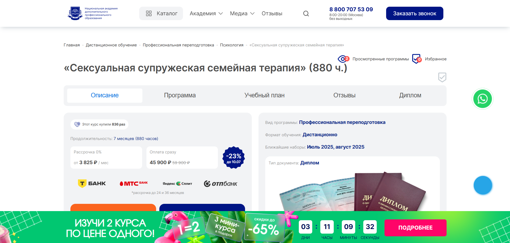
- ✅ Официальный сайт: nadpo.ru
- 💸 Цена: 45 900 ₽ ( скидка 23%)
- 💳 Рассрочка: от 3 825 ₽/мес, возможна на 24–36 месяцев без переплат
- 📚 Формат: дистанционный формат обучения, видеолекции, текстовые материалы, аудиоуроки, практические задания, обратная связь от преподавателей
- ⏳ Продолжительность: 7 месяцев (880 академических часов)
- 📜 Документ: диплом о профессиональной переподготовке установленного образца
- 📝 Трудоустройство: карьерное сопровождение, вакансии, помощь HR-эксперта и консультации по началу практики
- 🔷 Для кого подходит курс: для специалистов с высшим или средним профессиональным образованием, желающих освоить профессию сексолога или расширить компетенции в сфере семейного консультирования
Особенности:
Курс создан для тех, кто стремится получить востребованную профессию в области психологического консультирования через дистанционный формат. Образовательный процесс удобно встроен в повседневную жизнь, что позволяет совмещать обучение с работой. После успешного прохождения обучения выпускники получают диплом, вносимый в Федеральный реестр. Программа включает большое количество практических заданий и кейсов. Занятия ведут опытные преподаватели с учёной степенью. По окончании курса студенты могут вести частную практику или устроиться в психологические центры и клиники. Для выпускников предусмотрены карьерные консультации и поддержка в развитии личного бренда.
Чему учатся студенты:
- Проводить психологическое консультирование пар и индивидуальных клиентов
- Работать с сексуальными дисфункциями и интимными проблемами
- Разрабатывать терапевтические планы и программы
- Оказывать помощь в кризисных семейных ситуациях
- Использовать современные методы клинической практики в сексологии
- Вести дистанционные сессии и конфиденциальную документацию
Преподаватели:
- Анастасия Регнер — HR-специалист, бизнес-тренер, консультант по профессиональной ориентации, участник международных HR-конференций
- Виктория Кадина — эксперт по PR, развитию личного бренда и маркетингу, с опытом более 6 лет в интернет-продвижении
Преимущества:
- Удобный формат обучения с доступом 24/7 к платформе
- Выдаются дипломы установленного образца, вносимые в ФИС ФРДО
- Возможность начать практику во время обучения
- Карьерная поддержка и консультации от HR-наставников
- Доступ к ЛитРес и Библиоклубу в подарок
- Скидки и рассрочка без переплат
- Курс включает 204 часа практики и реальные кейсы
- Программа разработана с учетом ФГОС и профстандартов
Отзывы учеников:
Слушатели отмечают высокий уровень преподавания, большое количество практики, грамотную структуру материалов и возможность совмещать обучение с работой. Также хвалят оперативную поддержку, карьерное сопровождение и полезность консультаций по трудоустройству и личному бренду.
Перейти на официальный сайт курса14. Сексология в психологическом консультировании – Институт Профессионального Образования
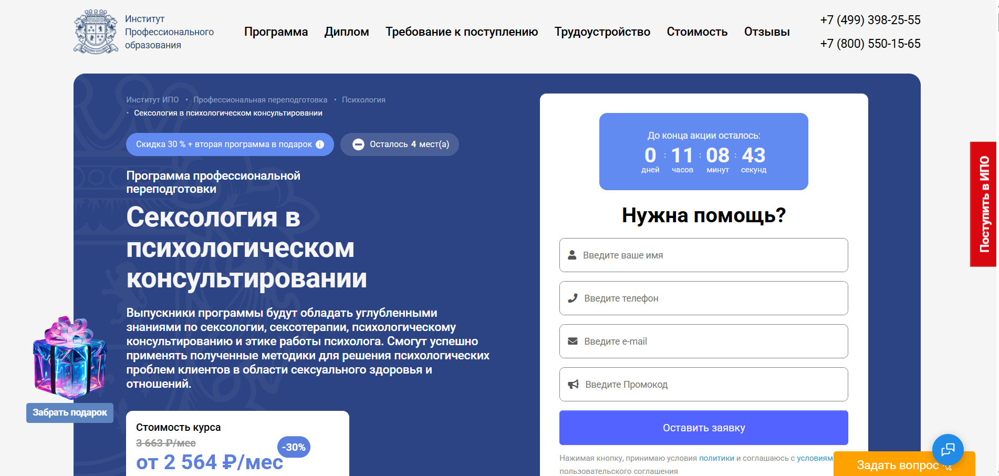
- ✅ Официальный сайт: ipo.msk.ru
- 💸 Цена: полная стоимость 87 924 ₽, со скидкой — 61 547 ₽.
- 💳 Рассрочка: доступна от 2 564 ₽/мес на срок до 24 месяцев без переплат.
- 📚 Формат: дистанционный формат с видеоуроками, домашними заданиями, тестами, вебинарами, практикой и обратной связью от кураторов.
- ⏳ Продолжительность: 6 месяцев (526 академических часов).
- 📜 Документ: диплом о профессиональной переподготовке установленного образца.
- 📝 Трудоустройство: помощь центра развития карьеры, консультации, рассылка резюме партнерам, сопровождение в процессе трудоустройства.
- 🔷 Для кого подходит курс: для начинающих, практикующих психологов, семейных консультантов, педагогов, социальных работников, стремящихся освоить сферу сексологии и навыки консультирования.
Особенности:
Курс создан для тех, кто хочет освоить профессию сексолога через дистанционное обучение в удобном формате. Программа сочетает теорию, практические задания и живое общение с опытными преподавателями. Выпускники получают диплом, дающий право консультировать клиентов по вопросам сексуальности. Обучение проходит на образовательной платформе с доступом к материалам 24/7. Благодаря гибкому графику студенты могут совмещать обучение с работой. Слушатели курса учатся разбирать реальные кейсы, участвуют в вебинарах, получают менторскую поддержку и проходят практику в процессе обучения. После окончания курса доступен налоговый вычет до 13% от стоимости.
Чему учатся студенты:
- Понимать физиологические и психологические аспекты сексуальности
- Работать с сексуальными нарушениями и проблемами в отношениях
- Применять методы психотерапии в сексуальной терапии
- Консультировать взрослых и пары по вопросам интимной жизни
- Использовать техники ролевых игр и средства сексуального взаимодействия
- Формировать уважительное отношение к вопросам сексуального здоровья
Преподаватели:
- Анна Владимировна Цяпало — практикующий психолог, сертифицированный сексотерапевт, более 10 000 часов клиентской практики.
- Олеся Александровна Круглушина — психолог-консультант, семейный психотерапевт, преподаватель, выпускница МГОУ.
- Татьяна Геннадьевна Урывчикова — клинический и нейропсихолог, член Ассоциации когнитивно-поведенческой психотерапии.
Преимущества:
- Дистанционный формат обучения в любом удобном графике
- Диплом о профессиональной переподготовке установленного образца
- Профессиональное менторство и поддержка преподавателей
- Доступ ко всем материалам даже после окончания программы
- Развитие практических навыков консультирования
- Погружение в сферу сексуальной терапии и работы с интимными запросами
- Помощь в построении карьеры и развитии личного бренда
- Возможность пройти программу без психологического образования, если есть высшее или среднее профобразование
Отзывы учеников:
Большинство студентов отмечают удобный дистанционный формат, доступность материалов, внимательное сопровождение кураторов и реальную практику. Часто подчеркивают, что курс помогает начать работу с клиентами в сфере сексуального здоровья и консультирования. Выпускники высоко оценивают содержание курса и индивидуальный подход со стороны преподавателей.
Перейти на официальный сайт курса15. Сексология в психологическом консультировании — Национальный центральный институт развития дополнительного образования
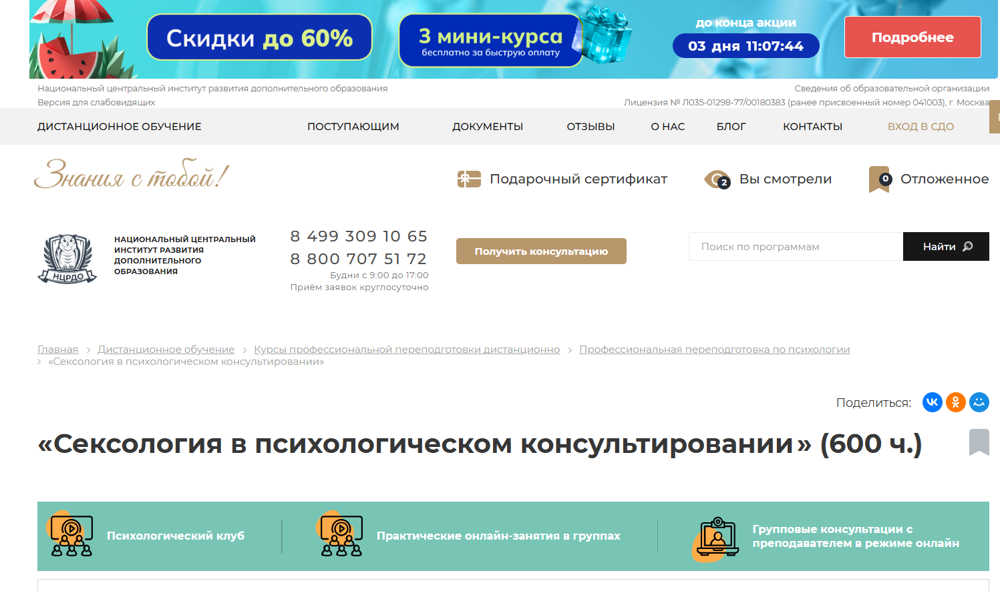
- ✅ Официальный сайт: ncrdo.ru
- 💸 Цена: 42 300 ₽ (старая цена — 98 600 ₽)
- 💳 Рассрочка: 1 175 ₽/мес на 36 месяцев, доступна прямо с сайта
- 📚 Формат: дистанционный формат, видеолекции, практические онлайн-занятия, тесты, вебинары, учебные материалы доступны круглосуточно
- ⏳ Продолжительность: 5 месяцев (600 часов)
- 📜 Документ: диплом о профессиональной переподготовке установленного образца
- 📝 Трудоустройство: HR-консультации и помощь в построении карьеры
- 🔷 Для кого подходит курс: для практических психологов, клинических специалистов, семейных консультантов и всех, кто хочет освоить профессию сексолога
Особенности:
Обучение проводится полностью в дистанционном формате с удобной системой доступа к учебной платформе. Материалы, включая лекции, тесты и методички, доступны в любое время. Студенты получают знания, необходимые для работы в сфере сексуальной терапии и семейного консультирования. Программа разработана с учетом требований ФГОС и профстандартов, позволяет совмещать обучение с работой. После успешного прохождения курса выдается диплом, внесённый в Федеральный реестр. Доступ к библиотекам ЛитРес и БиблиоКлуб включен. Обучение проходит под руководством опытных преподавателей с практикой в психологии и сексологии.
Чему учатся студенты:
- Психодиагностике сексуальных расстройств и психосексуального развития
- Работе с семейными и интимными проблемами клиентов
- Методам психологического консультирования и секстерапии
- Пониманию физиологии и анатомии человека
- Навыкам клинической практики и консультирования
- Решению конфликтов и проблем сексуального характера в браке
Преподаватели:
- Мельникова Елена Васильевна — научно-практический опыт с 2010 года
- Тышкевич Марина Юрьевна — практикующий специалист с 2006 года
- Шевченко Дария Игоревна — специалист в области психологии с 2018 года
- Салихова Мария Романовна — опыт преподавания с 2007 года
Преимущества:
- Доступ навсегда ко всем материалам и обновлениям курса
- Официальный диплом с регистрацией в Федеральной информационной системе
- Можно совмещать с работой или другим обучением
- Индивидуальный подход и сопровождение куратора
- Профессиональные преподаватели с реальным опытом
- Участие в практических группах и онлайн-клубах
- Возможность возврата 13% стоимости через налоговый вычет
- Простая рассрочка без скрытых условий
Отзывы учеников:
Студенты отмечают удобный дистанционный формат и грамотную структуру программы. Среди плюсов чаще всего называют практическую направленность, доступность преподавателей, наличие обратной связи, а также высокое качество образовательной платформы. Особенно выделяют возможность совмещать прохождение курса с основной занятостью.
Перейти на официальный сайт курса16. Сексология. Курс обучения для практикующих сексологов в психологическом консультировании – НИИДПО
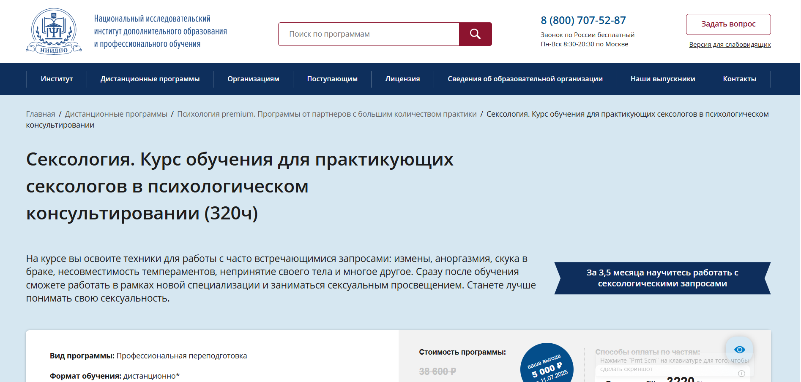- ✅ Официальный сайт: niidpo.ru
- 💸 Цена: 33 600 ₽ (стандартная — 38 600 ₽)
- 💳 Рассрочка: 0% на 12 месяцев, от 3220 ₽/мес, без первого взноса. Возможна оплата через Яндекс PAY
- 📚 Формат: дистанционный формат — видеолекции, текстовые материалы, тесты, практические задания с обратной связью, мастер-классы, доступ к архиву из 1000+ вебинаров
- ⏳ Продолжительность: 15 недель (3,5 месяца)
- 📜 Документ: диплом о профессиональной переподготовке установленного образца с правом на ведение деятельности в сфере психологического консультирования
- 📝 Трудоустройство: карьерные консультации, обучение продвижению, помощь в поиске клиентов
- 🔷 Для кого подходит курс: для психологов, семейных консультантов, специалистов смежных профессий, а также для желающих освоить профессию сексолога
Особенности:
Программа организована в удобном дистанционном формате, который позволяет проходить обучение в любом удобном графике. Это полноценная профессиональная переподготовка с акцентом на практические навыки работы в сфере сексуального здоровья и консультирования. Курсанты получают бессрочный доступ ко всем материалам курса и могут применять полученные знания сразу после окончания. После прохождения обучения выдаются дипломы установленного образца, которые действуют на территории России и в странах, где признаны российские документы. Формат курса построен с учетом занятости специалистов и подходит для совмещения с основной работой. Также предусмотрены онлайн-консультации с экспертами и поддержка куратора. После завершения курса участники уверенно работают с запросами в сфере сексуальной терапии и семейного консультирования.
Чему учатся студенты:
- Понимать биологические, психологические и социальные аспекты сексуальности
- Работать с частыми запросами: измены, аноргазмия, сексуальная несовместимость, принятие тела
- Оказывать помощь клиентам с интимными проблемами в рамках психологического консультирования
- Владеть техниками сексуальной терапии и консультирования пар
- Составлять индивидуальные планы работы с клиентами
- Применять современные подходы в сексуальном консультировании
- Разбираться в юридических и этических аспектах профессии сексолога
Преподаватели:
- Волкова Дарья Сергеевна — практикующий педагог-психолог, сертифицированный коуч, специалист в области семейной психологии
- Леонова Светлана Юрьевна — аналитический и клинический психолог, сексолог, кинотерапевт, преподаватель, супервизор
Преимущества:
- Дистанционное обучение на образовательной платформе без обязательных выездов
- Доступ к архиву вебинаров и дополнительным материалам даже после окончания курса
- Бессрочный диплом с возможностью ведения частной практики
- Рассрочка без процентов и комиссий, без первоначального взноса
- Обратная связь от экспертов по всем заданиям
- Поддержка кураторов и общение в профессиональном сообществе
- Обучение подходит как для специалистов, так и для тех, кто хочет освоить новую специальность
Отзывы учеников:
Слушатели отмечают, что курс удобно совмещается с работой, а дистанционный формат позволяет проходить обучение в комфортном темпе. Особенно ценятся практические задания, актуальные темы, а также доступ к материалам после окончания программы. Многие студенты подчеркивают высокую квалификацию преподавателей и грамотную структуру подачи материала.
Перейти на официальный сайт курса17. Психолог-сексолог – Учебный центр «НЦПО»
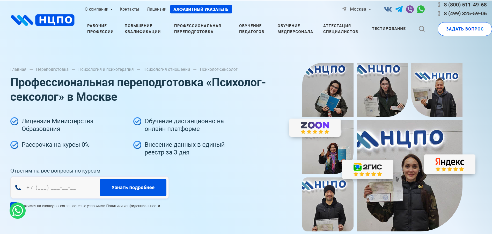- ✅ Официальный сайт: ncpo.ru
- 💸 Цена: от 19 800 ₽ (скидка 3 000 ₽ при оплате в день заявки)
- 💳 Рассрочка: 0% от 1 650 ₽ в месяц
- 📚 Формат: дистанционный формат обучения на платформе: лекции, тестирование, методические материалы, доступ 24/7
- ⏳ Продолжительность: от 250 до 1600+ академических часов
- 📜 Документ: диплом о профессиональной переподготовке установленного образца с внесением в реестр ФРДО
- 📝 Трудоустройство: диплом позволяет вести деятельность по специальности, пройти переаттестацию или получить новую должность
- 🔷 Для кого подходит курс: для специалистов с высшим или средним профессиональным образованием, желающих работать в сфере сексуального консультирования
Особенности:
Курс позволяет освоить профессию сексолога в удобном дистанционном формате с доступом к образовательной платформе в любое время. Обучение проходит по лицензии Министерства образования РФ. Все образовательные модули соответствуют требованиям профессионального стандарта. Студенты получают практические навыки по работе с клиентами в сфере сексуального здоровья и семейного консультирования. Учебный процесс включает лекции, тесты, задания и поддержку куратора. После окончания курса выпускники получают диплом установленного образца. Все документы доставляются бесплатно. Форматы обучения адаптированы под разные графики, что делает программу удобной для совмещения с работой. Выданный диплом бессрочен и позволяет официально вести практику.
Чему учатся студенты:
- Навыкам психологического консультирования в интимной сфере
- Работе с сексуальными проблемами в паре
- Методам семейной терапии
- Анализу психологических аспектов сексуальности
- Построению доверительных отношений с клиентами
- Проведению диагностики и разработке стратегии терапии
Преподаватели:
- Терешков Александр Леонидович — генеральный директор УЦ «НЦПО», эксперт по образовательным стандартам
- Грезнева Диана — преподаватель с практическим опытом консультирования
- Малкова Анна — специалист в области клинической и семейной психологии
Преимущества:
- Дистанционное обучение на образовательной платформе с круглосуточным доступом
- Выдаются дипломы установленного образца с внесением в реестр ФРДО
- Прозрачное оформление через официальный договор
- Беспроцентная рассрочка без скрытых платежей
- Подходит для переаттестации и смены профессии
- Материалы курса остаются навсегда
- Помощь в подборе курса и документов
- Оперативная доставка диплома и поддержка менеджера
Отзывы учеников:
В отзывах студенты чаще всего отмечают простой и понятный дистанционный формат, высокую квалификацию преподавателей, наличие всех нужных материалов, индивидуальный подход и реальную возможность совмещать обучение с работой. Также положительно оценивают официальность программы и гарантии получения диплома.
Перейти на официальный сайт курса18. Сексология — Учебный центр АПОК
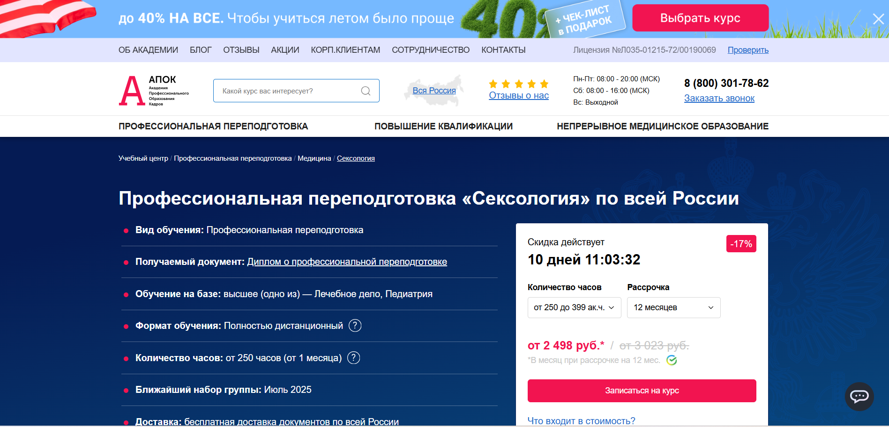
- ✅ Официальный сайт: apokdpo.ru
- 💸 Цена: от 29 980 ₽ (со скидкой 17%).
- 💳 Рассрочка: до 12 месяцев от 2 498 ₽/мес, беспроцентно.
- 📚 Формат: дистанционный формат обучения — видеолекции, тесты, учебные пособия, итоговая аттестация.
- ⏳ Продолжительность: от 1 месяца, от 250 до 900 академических часов.
- 📜 Документ: диплом о профессиональной переподготовке установленного образца.
- 📝 Трудоустройство: возможно ведение консультативной практики в государственных и частных медицинских учреждениях.
- 🔷 Для кого подходит курс: для врачей с высшим медицинским образованием (лечебное дело, педиатрия), желающих освоить новую специальность.
Особенности:
Курс проводится в удобном дистанционном формате без необходимости посещения учебного центра. Программа ориентирована на профессиональную переподготовку с акцентом на практическое применение знаний в области современной сексологии и сексуальной терапии. Материалы доступны в любое время, что позволяет проходить обучение в любом удобном графике. Обучение подходит для врачей, стремящихся к расширению профессиональных компетенций и карьерному росту. По завершении курса выпускники получают диплом установленного образца, зарегистрированный в ФИС ФРДО. Вся образовательная деятельность лицензирована, документы доставляются по всей России бесплатно.
Чему учатся студенты:
- Диагностике и консультированию по вопросам сексуального здоровья
- Работе с сексуальными расстройствами и девиациями
- Основам сексуального развития и биологическим аспектам поведения
- Методам стимуляции сексуального влечения
- Применению психотерапии в сфере интимных проблем
- Этичному взаимодействию с клиентами
Преподаватели:
- Информация о преподавателях не указана на сайте
Преимущества:
- Дистанционное обучение без отрыва от работы
- Выдаются дипломы установленного образца с внесением в ФИС ФРДО
- Возможность рассрочки без переплат
- Гибкие форматы обучения с индивидуальным подходом
- Бесплатная доставка итоговых документов
- Поддержка кураторов на всех этапах обучения
- Возможность ускоренного завершения курса
- Подходит для профессионального роста и смены направления
Отзывы учеников:
Слушатели часто отмечают удобный дистанционный формат и практическую направленность курса. Положительно оценивают доступность учебных материалов, гибкий график, профессиональный подход кураторов. Многие указывают на улучшение карьерных перспектив после завершения обучения и получение дополнительной квалификации.
Перейти на официальный сайт курса19. Сексология — Учебный центр дополнительного профессионального образования ЭКОДПО
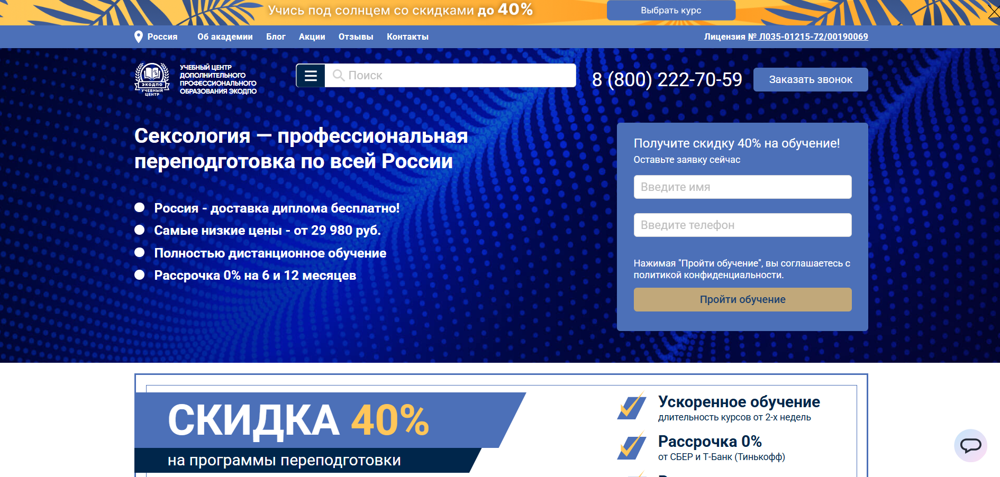- ✅ Официальный сайт: ecodpo.ru
- 💸 Цена: от 29 980 ₽ (со скидкой 40%).
- 💳 Рассрочка: 0% на 6 и 12 месяцев — от 2 500 ₽ в месяц.
- 📚 Формат: дистанционный формат, видеоуроки, лекции, тесты, вебинары, доступ к методическим материалам 24/7.
- ⏳ Продолжительность: от 1,5 до 3 месяцев (252–550 часов).
- 📜 Документ: диплом о профессиональной переподготовке установленного образца, внесение данных в ФИС ФРДО.
- 📝 Трудоустройство: возможность трудоустройства в клиники, центры психологической помощи, частные медучреждения.
- 🔷 Для кого подходит курс: медработникам с высшим медицинским образованием и интернатурой/ординатурой по психиатрии.
Особенности:
Программа профессиональной переподготовки реализуется в дистанционном формате без вступительных испытаний. Образовательный процесс строится на интерактивной платформе с круглосуточным доступом к материалам. Все слушатели получают поддержку кураторов на протяжении всего обучения. После окончания курса выдаются дипломы установленного образца. Учебный центр ЭКОДПО предлагает как стандартные, так и индивидуальные программы с учетом целей клиента. Доставка диплома осуществляется бесплатно по всей России, а документы готовятся уже в день оплаты. Обучение проходит в удобном формате с возможностью совмещать с работой.
Чему учатся студенты:
- Психология сексуальности и этапы формирования сексуальности
- Диагностика и терапия сексуальных расстройств
- Психологическое консультирование в интимной сфере
- Семейная терапия и психосоматика
- Основы сексологии и психотерапии
- Особенности полового развития и репродуктивного здоровья
- Работа с девиациями и нарушениями сексуального поведения
- Этика практикующего сексолога
Преподаватели:
- Методисты ЭКОДПО — специалисты с опытом преподавания и работы в клинической практике (ФИО на сайте не указаны)
Преимущества:
- Полностью дистанционное обучение с доступом 24/7
- Выдача диплома установленного образца и внесение данных в реестр ФИС ФРДО
- Бесплатная доставка документов по всей России
- Индивидуальный учебный план по запросу
- Возможность начать обучение в любой день
- Гибкие условия рассрочки без переплат
- Поддержка кураторов и бесплатная пересдача итоговой аттестации
- Скидки при групповом обучении
Отзывы учеников:
Студенты особенно отмечают удобный дистанционный формат, насыщенное содержание курсов, поддержку преподавателей и оперативную выдачу документов. Многие подчеркивают, что обучение помогло сменить профессию или развить новое направление в работе.
Перейти на официальный сайт курса20. Сексология в психологическом консультировании — Центральная академия профессиональной переподготовки и повышения квалификации кадров
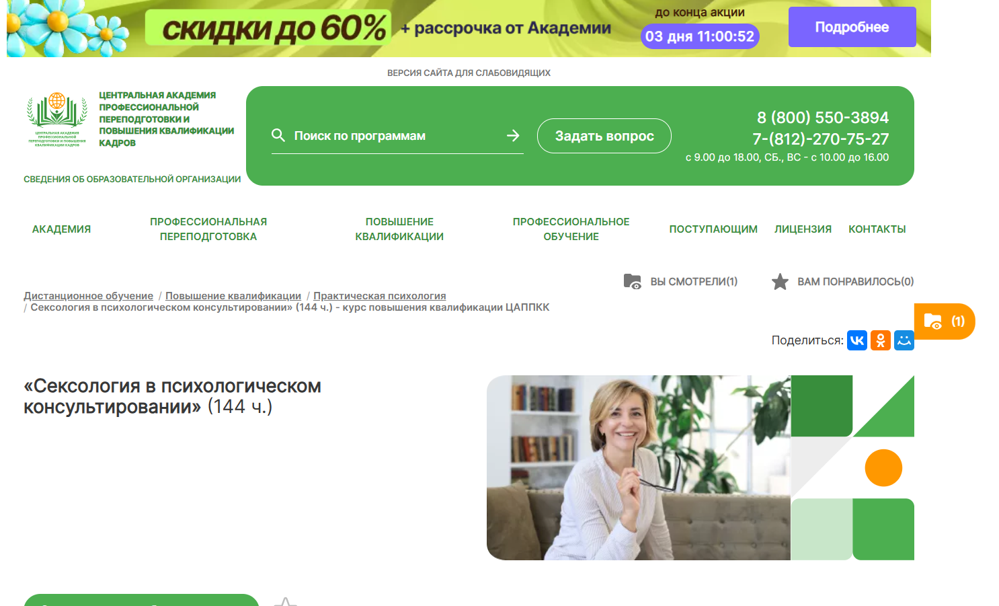
- ✅ Официальный сайт: appkk.ru
- 💸 Цена: 10 500 ₽ (вместо 14 700 ₽)
- 💳 Рассрочка: от 875 ₽/мес. на 12 месяцев через Тинькофф и Сбер
- 📚 Формат: дистанционный формат: видеолекции, тесты, контрольные задания, доступ к библиотеке вебинаров
- ⏳ Продолжительность: 2 месяца (144 академических часа)
- 📜 Документ: удостоверение о повышении квалификации, данные заносятся в ФИС ФРДО
- 📝 Трудоустройство: курс помогает повысить квалификацию и расширить практику в сфере психологического консультирования
- 🔷 Для кого подходит курс: практическим психологам, психотерапевтам, клиническим и семейным психологам, а также студентам профильных вузов
Особенности:
Программа построена с учетом современных требований к дистанционному обучению и профессиональной подготовке специалистов в сфере сексологии. Слушатели получают бессрочный доступ ко всем материалам, включая библиотеку вебинаров. Образовательный процесс поддерживает удобный формат: занятия можно совмещать с основной работой или учебой. В рамках курса слушатели изучают психологические аспекты сексуальных отношений и получают необходимые навыки консультирования. Все документы, выдаваемые по завершению курса, проходят регистрацию в государственном реестре. Служба поддержки работает ежедневно, а у каждого обучающегося есть личный куратор. Это особенно важно для тех, кто только начинает путь в профессии сексолога.
Чему учатся студенты:
- Понимать ключевые аспекты современной сексологии
- Применять навыки консультирования в интимной сфере
- Работать с сексуальными расстройствами и нарушениями
- Оказывать помощь в семейных и партнерских кризисах
- Использовать авторские методики преподавателей
- Развивать практические навыки общения с клиентами
Преподаватели:
- Курс разработан командой методистов и преподавателей-практиков Центральной академии с опытом в клинической и семейной психологии
Преимущества:
- Удобный дистанционный формат с доступом 24/7
- Сертификат установленного образца и регистрация в ФИС ФРДО
- Поддержка личного куратора и техподдержки без выходных
- Доступ к дополнительным материалам и библиотеке БиблиоКлуб
- Рассрочка без процентов от крупных банков
- Возможность совмещать обучение с работой
- Отсутствие ограничений по месту жительства — обучение доступно из любой точки
Отзывы учеников:
Слушатели отмечают высокую организацию дистанционного процесса, грамотных преподавателей и возможность изучать материалы в любом удобном темпе. Особенно хвалят поддержку куратора и быструю обратную связь. Выпускники подчеркивают, что курс дает не только знания, но и уверенность в работе с клиентами по вопросам сексуального здоровья.
Перейти на официальный сайт курсаКто такой сексолог?
Сексолог — это специалист, занимающийся изучением и решением проблем, связанных с сексуальной жизнью человека. Он помогает людям разобраться в вопросах сексуального здоровья, интимных взаимоотношений и психоэмоционального состояния, влияющего на сексуальное поведение. Сексолог может быть как врачом, так и психологом, имеющим соответствующую специализацию.
Что делают сексологи и чем занимаются?
Сексологи работают с индивидуальными пациентами, парами и даже группами, помогая им:
- разрешать сексуальные дисфункции (эректильная дисфункция, аноргазмия и т. д.);
- налаживать интимные отношения между партнерами;
- преодолевать психологические барьеры, связанные с сексом;
- работать с травмами, связанными с сексуальным насилием или негативным опытом;
- консультировать по вопросам полового воспитания и идентичности;
- помогать в случаях зависимости от порнографии или сексуального компульсивного поведения.
Важная часть работы сексолога — просветительская деятельность и профилактика сексуальных расстройств.
Что должен знать и уметь психлог-сексолог?
Профессиональный сексолог должен обладать широким кругозором и знаниями в смежных областях:
- Медицина: анатомия, физиология, гормональные процессы;
- Психология: межличностные отношения, травмы, когнитивно-поведенческая терапия;
- Половое воспитание и этика общения;
- Юриспруденция: знание прав человека, согласия на половой акт, работа с несовершеннолетними;
- Навыки эмпатии, активного слушания и конфиденциальности.
Сексолог обязан быть не только профессионалом, но и тактичным собеседником, способным выстроить доверительные отношения с клиентом.
Востребованность и зарплаты сексологов в России в 2025 году
По данным на 2025 год, профессия сексолога становится все более востребованной. Современное общество становится более открытым к обсуждению тем сексуальности и ментального здоровья. Особенно растёт спрос на:
- семейных сексологов-консультантов;
- специалистов по ЛГБТК+ вопросам;
- онлайн-сексологов (телемедицина);
- психологов-сексологов в крупных городах и частных клиниках.
Средняя зарплата сексолога в России в 2025 году составляет от 80 000 до 200 000 рублей в месяц в зависимости от региона, стажа и формата практики (онлайн, офлайн, клиника, частная практика).
Как стать сексологом и где учиться?
Чтобы стать сексологом, необходимо получить базовое образование в сфере:
- медицины (врач-сексолог);
- или психологии (психолог-сексолог).
Затем пройти профессиональную переподготовку по направлению «Сексология».
Продолжительность переподготовки — от 6 месяцев до 2 лет. После обучения возможно получение сертификата, позволяющего вести практику.
Какие существуют направления в сексологии?
Сексология включает в себя множество специализаций, в том числе:
- Клиническая сексология — лечение сексуальных расстройств;
- Семейная и парная терапия — решение проблем в интимной жизни пары;
- Педагогическая сексология — половое просвещение подростков и молодежи;
- Когнитивно-поведенческая сексотерапия — работа с убеждениями и страхами;
- ЛГБТК+ сексология — помощь представителям гендерных и сексуальных меньшинств.
Каждое направление требует специфических знаний и подходов в терапии.
Преимущества и вызовы профессии сексолога
Преимущества:
- Высокий уровень востребованности и дохода;
- Возможность совмещать онлайн и офлайн практику;
- Социальная значимость и помощь людям;
- Постоянное профессиональное развитие.
Сложности:
- Необходимость работать с табуированными темами;
- Эмоциональная нагрузка и выгорание;
- Постоянная необходимость в переподготовке и повышении квалификации.
Сексолог — это не просто профессия, а важная миссия, направленная на улучшение качества жизни людей через решение интимных и психологических проблем. В 2025 году эта профессия уверенно входит в число наиболее актуальных в сфере здравоохранения и психологии. Если вы чувствуете в себе желание помогать людям на глубоком уровне и не боитесь сложных тем — сексология может стать вашим профессиональным призванием.
Что включает в себя обучение на сексолога?
Обучение на сексолога включает в себя освоение основ современной сексологии, психологического консультирования, сексуальной терапии, а также развитие навыков консультирования клиентов по вопросам интимной сферы и сексуальных проблем. В дистанционном формате проходят как теоретические, так и практические занятия.
Какие форматы обучения по сексологии доступны сегодня?
На сегодняшний день доступны различные форматы обучения, включая дистанционный формат, онлайн курсы, вечерние занятия и очно-заочные программы. Дистанционное обучение позволяет совмещать учебу с работой и выбирать удобный формат прохождения.
Что дает профессиональная переподготовка на психолога-сексолога?
Профессиональная переподготовка позволяет освоить новую специальность, получить дополнительное профессиональное образование и начать карьеру в сфере сексуальных отношений, семейной терапии и психологического консультирования. После завершения обучения выдаются дипломы установленного образца.
Можно ли получить диплом после окончания курсов?
Да, после успешного прохождения программы или прохождения курсов слушателям выдаются дипломы или сертификаты установленного образца, подтверждающие получение профессиональных компетенций и право работать в сфере сексологии.
Какие знания дают онлайн-курсы по сексологии?
Онлайн курсы обучают работе с психологическими аспектами сексуальности, методам психологического консультирования, семейному консультированию и сексуальной терапии. Слушатели получают практические навыки и доступ к учебной платформе с дополнительными материалами.
Кому подходит обучение на сексолога?
Программы подойдут практическим психологам, семейным консультантам, врачам сексологам, клиническим психологам и тем, кто хочет освоить новую профессию или повысить свою квалификацию в сфере сексуальных отношений.
Как проходит дистанционное обучение на сексолога?
Дистанционное обучение проходит через учебную онлайн платформу, где доступны видеолекции, практические задания, вебинары и тесты. Обучение удобно тем, что проходит в любом удобном графике и позволяет совмещать с работой.
Какие квалификации получают выпускники?
После успешного завершения курса выпускники получают квалификацию сексолога с правом заниматься психологическим консультированием и сексуальной терапией. Это подтверждается дипломом установленного образца или электронным сертификатом.
Какие темы включены в курс по сексологии?
Учебные программы включают темы психологии сексуальности, сексуальных расстройств, интимных проблемах, методов консультирования, современных подходах и семейной психологии.
Какой документ выдается после окончания программы?
По результатам прохождения программы слушателю выдается диплом или сертификат, который подтверждает дополнительное профессиональное образование и позволяет вести практику как психолог-консультант или сексолог.
Можно ли совмещать обучение с работой?
Да, дистанционные образовательные форматы и удобный график позволяют совмещать обучение с работой или другими обязанностями. Учебный процесс выстроен таким образом, чтобы материалы были доступны в любое время.
Какие специалисты помогают в процессе обучения на сексолога?
Обучение сопровождают опытные преподаватели, кураторы, практикующие психологи и врачи сексологи. Они помогают клиентам и слушателям освоить все этапы обучающего процесса, а также проверяют задания.
Какая стоимость обучения на сексолога?
Стоимость курса зависит от выбранной образовательной программы, ее длительности и формата. Многие платформы предлагают рассрочку, скидки и даже бесплатные вебинары в рамках ознакомления с материалами.
Сколько времени занимает профессиональная переподготовка?
Обычно профессиональная переподготовка длится от 3 до 12 месяцев в зависимости от программы обучения. Этапы обучения включают изучение теории, практику и итоговую аттестацию.
Нужно ли иметь медицинское или психологическое образование?
Для некоторых программ профессиональной переподготовки требуется высшее психологическое или медицинское образование. Однако существуют и курсы, доступные со средним профессиональным образованием, особенно в формате повышения квалификации.
Какой результат можно получить после окончания курса по сексологии?
Результатом обучения становится получение профессиональных компетенций, возможность вести частную практику, работать с интимными проблемами клиентов и применять современные методы консультирования в реальной практике.
Где можно работать после прохождения обучения на сексолога?
Выпускники могут работать в центрах психологической помощи, семейных консультациях, медицинских учреждениях, а также вести частную практику. Некоторые выпускники становятся экспертами в сфере сексуального здоровья и психотерапии.
------------------------------------------------
Реклама. Информация о рекламодателе по ссылкам в статье.